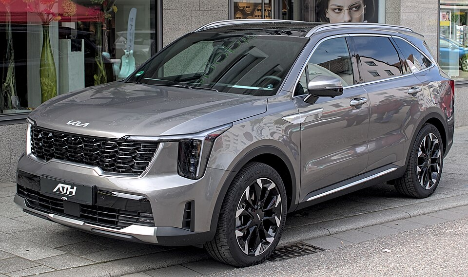
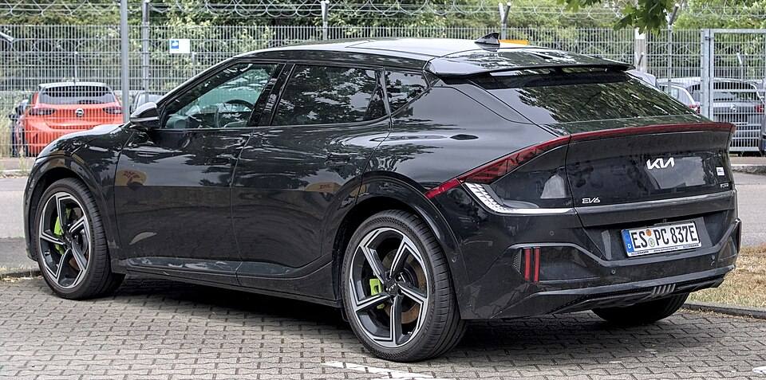
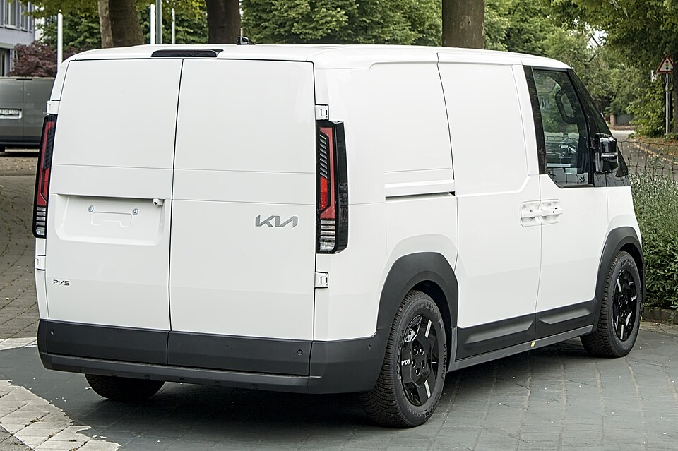

이 기업은? 쏘렌토, 스포티지, 카니발 같은 SUV와 레저용 차로 인기가 높은 자동차 회사예요. 1998년 현대차그룹에 들어간 뒤 디자인을 크게 바꾸며 성장했고, 2025년에는 313만 대를 팔아 역대 최대 판매·매출(114.1조 원)을 기록했어요. 전기차 EV 시리즈와 목적기반차량(PBV)에도 힘을 쏟고 있어요.
핵심 정보 대표
대표이사 송호성 · 송민수그룹 회장 정의선 (현대차그룹)
무엇을 하는 기업인가요? 칸에 마우스를 올리거나 누르면 자세한 설명을 볼 수 있어요.
SUV·RV 쏘렌토, 스포티지, 셀토스, 카니발 자세히 보기 
사진: Alexander-93 · CC BY-SA 4.0 · 위키미디어 커먼즈 SUV·RV 기아 판매의 중심이에요. 미국·유럽에서도 잘 팔리고, 미니밴 카니발은 국내 레저용 차의 대표 모델이에요.
대표 예 쏘렌토, 스포티지, 셀토스, 카니발
승용차 K5, K8, 모닝, 레이 자세히 보기 사진: Dinkun Chen · CC BY-SA 4.0 · 위키미디어 커먼즈 승용차 중형 세단 K5와 준대형 K8, 경차 모닝·레이 등을 만들어요.
대표 예 K5, K8, 모닝, 레이
전기차 EV3, EV6, EV9 등 EV 시리즈 자세히 보기 
사진: Alexander-93 · CC BY-SA 4.0 · 위키미디어 커먼즈 전기차 전기차 전용 플랫폼으로 만든 EV 시리즈예요. 2021년 EV6를 시작으로 대형 SUV EV9, 소형 EV3 등으로 넓혔어요.
대표 예 EV3, EV6, EV9
PBV(목적기반차량) 배송·택시 등 용도에 맞춘 전기 밴 PV5 자세히 보기 
사진: Alexander Migl · CC BY-SA 4.0 · 위키미디어 커먼즈 PBV(목적기반차량) 택배, 택시, 이동 사무실처럼 쓰임새에 맞춰 실내를 바꿀 수 있는 전기 밴이에요. 2025년 첫 모델 PV5를 내놓았어요.
대표 예 PV5
걸어온 길 1944 경성정공으로 설립, 자전거 부품 생산
1952 기아산업으로 이름을 바꾸고 첫 국산 자전거 삼천리호 생산
1962 첫 국산 삼륜 화물차 K-360 생산
1974 첫 승용차 브리사 생산
1998 현대자동차에 인수되어 현대차그룹 편입
2021 회사 이름을 기아로 바꾸고 첫 전용 전기차 EV6 출시
2023 대형 전기 SUV EV9 출시
2025 연 313만 대 판매·매출 114.1조 원으로 역대 최대, 첫 PBV 모델 PV5 출시
출처: 실적 Open DART 자동 수집, 기아 2025년 경영실적 발표 · 마지막 업데이트: 2026년 11월 23일